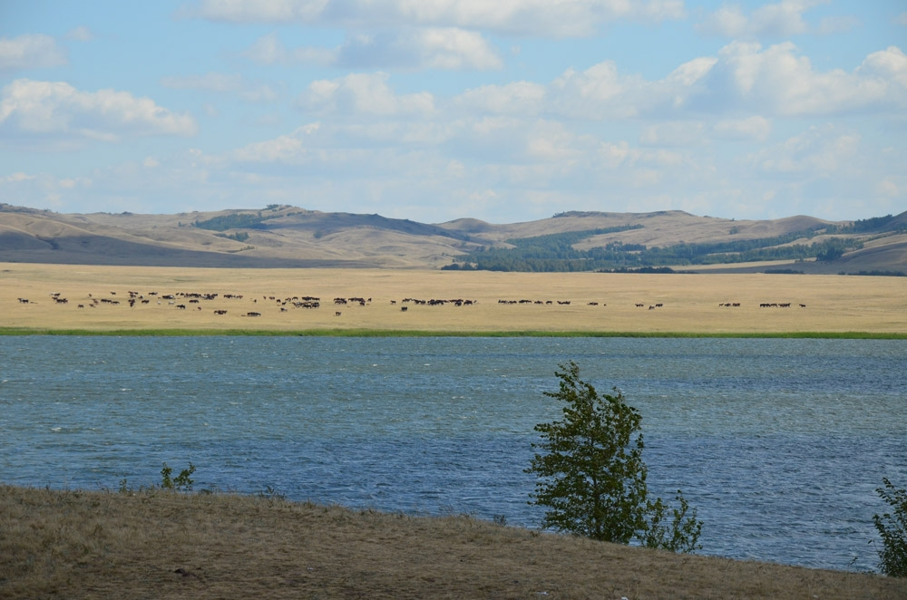

Ерейментау — «малая преграда гор» или «малые горы», которая находится на юго-востоке Акмолинской области и северо-востоке Карагандинской области. Этот горный остров скалистых сопок и горных кряжей окаймлён узкой лентой сохранившихся нераспаханных предгорных степей. Он представляет собой фрагмент громадной территории Казахского мелкосопочника, так называемой Казахской складчатой страны, и является частью древней Тимано-Алтайской горной системы.
Ерейментауский район имеет все предпосылки для развития туристкой деятельности. Особенностью региона является наличие широко известных гор Карагайлы (Соколиные горы). Горный ландшафт в Ерейментауском районе, богатая флора и фауна, обилие озер, расположенных среди сплошного казахского мелкосопочника – все это богатство еще слабо используется для привлечения туристских потоков.
Ерейментауские низкие горы и Соколиные островные горы как нельзя лучше подходят для развития экологического экстремального туризма. Обширность территории и, практически, малонаселенность позволяет устанавливать оптимальную нагрузку на территорию Ерейментауских гор не в ущерб природно-территориальному комплексу.
«Соколиные горы» расположен к востоку от Астаны в Ерейментауском районе, среди гранитных скал и леса в 135 км от Астаны. Здесь можно проводить пешеходные, конные, велосипедные и автомобильные туры, заниматься скалолазанием.
Конный кольцевой маршрут проходит от поселка Тургай к 3-м живописным гранитным сопкам, лежащим на расстоянии 5-10 км друг от друга. С вершины сопок открывается великолепный вид на окрестности, покрытые ковром из можжевельника являющимся редким и ценным растением. Встречаются многочисленные могильники каменного и бронзового века, скифские памятники, тюркские каменные изваяния.(и. т.д)

В горном массиве Ерейментау и его окрестностях, которые находятся в Ерейментауском районе Акмолинской области и южная часть гор в Осакаровском районе Карагандинской области, насчитывает более двадцати озер - Тойганколь, Тандыколь, Майколь, Кумдыколь, Бозайгыр, Кобланколь-Ажыбай, Тлембет, Коржынколь, Тениз, Кобейтуз, Тайбай, Шоптыколь, Балыхты, Кайракты, Ащыкуль, Тургай, Каскат, Шакшабай, Кобетуз, Караколь и другие.
Особенно богата озерами западная часть гор Ерементау. Глубина озер, невелика: от одного – до десяти метров в отдельных случаях. Подпитка озер за счет весеннего паводка, тогда они особенно становятся большими.
Некоторые озера, вследствие заиления и зарастания тростником находятся в стадии деградации. Весной за счет талых вод, жизнь в них еще теплится, а затем, особенно в жаркие летние месяцы – июнь, июль, чаще всего скупые на осадки, они нередко пересыхают.
В горах и окрестностях насчитывается более двадцати речушек и речек. Среди них реки Кумай, Карасу, Куаныш, Жартас, Акмырза, Карашат, Карабай, Кедей, Жарсор, Байгул и др. Самыми крупными считаются реки Селеты и Уленты.
В числе искусственных водоемов не только в горах, но и в области является Селетинское водохранилище. Ихтиофауна водоемов достаточно разнообразна. В реках, озерах, водохранилище прекрасно себя чувствуют золотой и серебряный карась, язь, чебак, линь, щука, окунь, ерш, налим, акклиматизировались и надежно прописались карп, лещ, судак, рипус, сиг, толстолобик, белый амур и другие представители водных просторов.
Родники – бесценный дар природы. Это они бережно собирают воду талых и дождевых вод, фильтруют ее. Родники являются не только основой образования лесных ручьев и малых и больших степных речек.
Они наряду с талыми водами и летними осадками хорошо подпитывают чистейшей водой степные озера

Само озеро расположено неподалеку от городка Ерейментау. Но, к сожалению, сейчас она закрыта Озера и реки в горах Ерейментау.
Саккулак би родился в 1800 году в селе Коржынколь.Саккулак славился своим ораторским искусством. Помимо навыков вязания, он также был снайпером
Саккулак - внук Богенбай батыра. В 12-13 лет Саккулак Би гуляла рядом с Бапан Би и осваивала ораторское искусство. В 15 лет увлекся танцами. Ораторские произведения танца Саккулак: «Благословение Саккулака Чокану», «О разуме», «Держись подальше от четырех вещей», «Он был одним из ученых», «Он сказал Чингизу свои слова», «О науке», «Байдалы». Танцору »,« на смерть Моисея »и другие.
Саккулак Би умер в 1888 году. У него остались семь сыновей, Нуралы и Ералы, которые были ораторами и танцорами.
Возле западной стены возле старого камня с именем одного из его потомков установлены три новых надгробия с именами Саккулака и двух его сыновей. В 2000 году на развалинах мавзолея был построен восьмиугольный купольный саркофаг центральной композиции. Ерейментауский район Акмолинской области расположен на берегу озера Коржынколь и является одним из архитектурных памятников XIX века.
Мавзолей находится к северо-востоку от Ерейментау, Ерейментауского района.